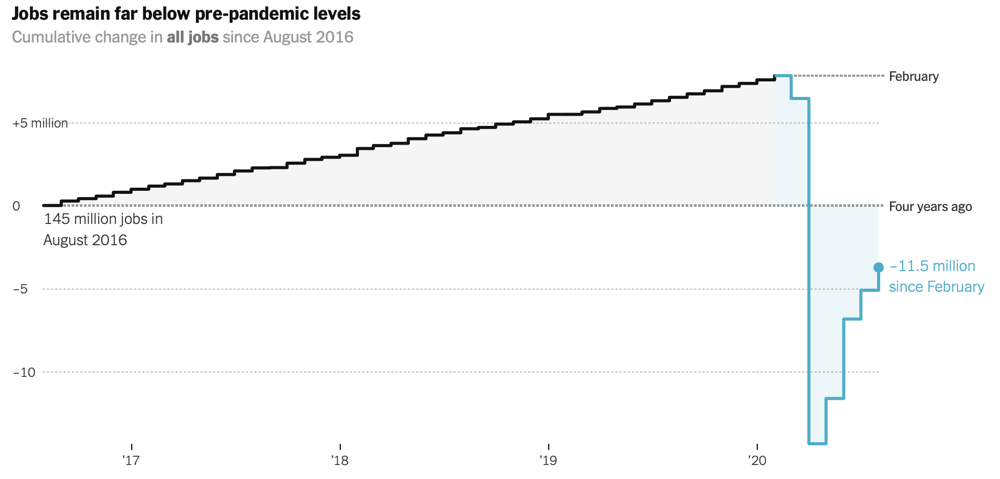

My favourite data-driven image
To find an interesting image, I explored recent news with data-driven images from varias websites. The above one is my favourite one. This image shows the cumulative changes in all jobs since August 2016. First of all, the image includes a horizantal line as a reference to make it easy to read and compare at any time point. The image use two colors with approporate saturation and contrast, black and blue, for the period before COVID and during COVID. This color selection makes the large decrease in April 2020 distinct. It also use same color but different illumances to show the areas between the line and the reference horizantal line.It helps us distinguish two period and also give us a general sence about the job market as positive larger area means better market. Finally, this image also record the special time, which makes it more interesting.